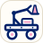

Tutki. Oivalla. Sovella.
Työn alla
Simulaatiot, esimerkit ja tehtävät kaikkiin lukion fysiikan moduuleihin.
Moduulit
- FY1 Fysiikka luonnontieteenäMiten fysiikka mittaa ja selittää maailmaa protonista galakseihin?
- FY2 Fysiikka, ympäristö ja yhteiskuntaMistä saamamme energia tulee, ja miten sen käyttö vaikuttaa ympäristöön?
- FY3 Energia ja lämpöMiten energia siirtyy lämpönä ja työnä, ja miten se muuttaa ainetta?
- FY4 Voima ja liikeMiten voimat muuttavat kappaleen liikettä?
- FY5 Jaksollinen liike ja aallotMiksi kappaleet pyörivät ja värähtelevät, ja miten aallot etenevät?
- FY6 SähköMiten sähkövirta kulkee virtapiirissä ja siirtää energiaa?
- FY7 Sähkömagnetismi ja valoMiten sähkö ja magnetismi liittyvät toisiinsa, ja mitä valo on?
- FY8 Aine, säteily ja kvantittuminenMiksi atomin energia on kvantittunut, ja mistä säteily syntyy?
- FY9 Fysiikan ylioppilaskertausKertaa, yhdistä ja harjoittele koetta varten.
- FY10 Kokeellinen fysiikkaTutki, mittaa ja raportoi.
- FY14 Road to FusionModernin fysiikan synnystä ITERiin.
- LUMA-tutor Tiede kuuluu kaikilleToimi tiedetutorina: suunnittele tiedetapahtumia ja osallistu niihin.

Kilparobotiikka Rakenna, ohjelmoi ja kilpaileSuunnittele, rakenna ja ohjelmoi VEX V5 -kilparobotteja yhdessä joukkueen kanssa.